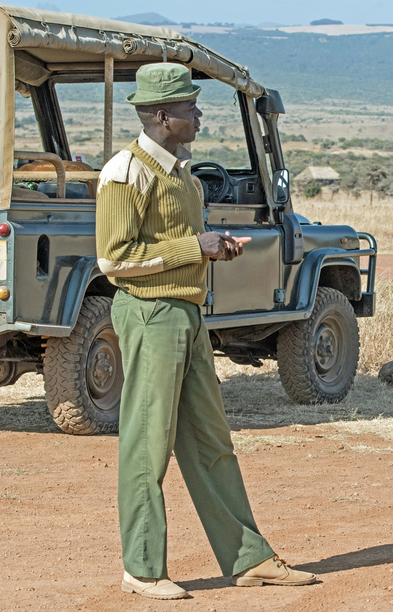

Everything you need to know before booking your eco-trip

We only list destinations, lodges, and tours that meet verified sustainability standards — including renewable energy use, community revenue sharing, and active conservation partnerships. We personally vet every listing before it goes live.
Browse our Destinations or Eco-Accommodations pages, then fill out the inquiry form on our Contact & Booking page with your preferred dates and trip details. Our team will respond within 24 hours with availability and pricing.
Yes, all accommodation prices on our Eco-Accommodations page are listed in Kenyan Shillings per night, grouped into three bands: below KSh 50,000, KSh 50,000–100,000, and above KSh 100,000.
Our sample itineraries outline the daily activities and experiences, but transport arrangements are confirmed directly with you once you submit a booking inquiry, since options vary by group size and route.
The Great Migration typically arrives between July and October. For a quieter, more sustainable visit with lower conservancy congestion, consider the shoulder months of April–May or November.
Many of our listed conservancies channel a portion of guest fees directly to local landowners as conservancy lease payments. We also prioritize community-employed guides and locally sourced goods wherever possible.
Yes. On the Eco-Accommodations page, you can search by name, filter by type (hotel, lodge, or campsite), and filter by price range — all results update instantly as you adjust your filters.
We recommend neutral-colored clothing, a reusable water bottle, a portable solar charger, and biodegradable toiletries. Check our Travel Blog for a full packing guide with more detailed tips.
Absolutely. Many of our partner conservancies and lodges welcome solo travelers and can arrange shared game drives or guided walks to help you connect with other guests if you'd like.
Click the "Dark Mode" button in the top navigation bar on any page. Your preference is saved automatically, so the site will remember your choice the next time you visit.